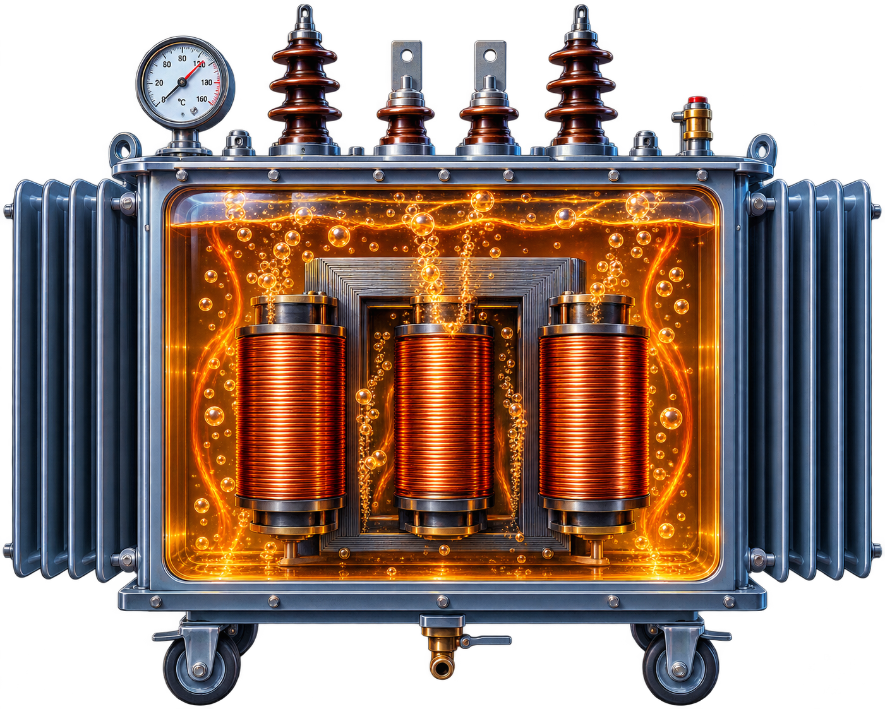

TANQUE E ALETAS
Dissipação de calor
para o ambiente
Dissipação de calor
para o ambiente
ÓLEO ISOLANTE
Transporta o calor
para o tanque
Transporta o calor
para o tanque
BOBINAS
Fonte de calor
1000 W cada
Fonte de calor
1000 W cada
NÚCLEO
Fonte de calor
500 W
Fonte de calor
500 W
Transferência de calor
para o ambiente
para o ambiente
←
←
←
→

CAMINHO DA TRANSFERÊNCIA DE CALOR
Bobinas e núcleo
Geram calor
Geram calor
→
Óleo isolante
Transporta o calor
Transporta o calor
→
Tanque e aletas
Dissipam o calor
Dissipam o calor
→
Ambiente
Recebe o calor
Recebe o calor
TEMP. MÉDIA DO ÓLEO
—
Temperatura média simulada
TEMP. MÁXIMA DO ÓLEO
—
Região mais quente
DIFERENÇA TÉRMICA ΔT
—
Óleo médio − ambiente
DISSIPAÇÃO RELATIVA
—
Capacidade relativa de dissipar calor
RISCO TÉRMICO
—
—
STATUS DO TRANSFORMADOR
—
—
IDEIA FÍSICA CENTRAL
Temperatura ambiente elevada → menor diferença térmica → menor dissipação de calor → aumento da temperatura do óleo.
ℹ Simulador didático inspirado no estudo CFD de um transformador
de 250 kVA. Os valores apresentados têm finalidade educacional
e não representam reprodução numérica exata da simulação do artigo.